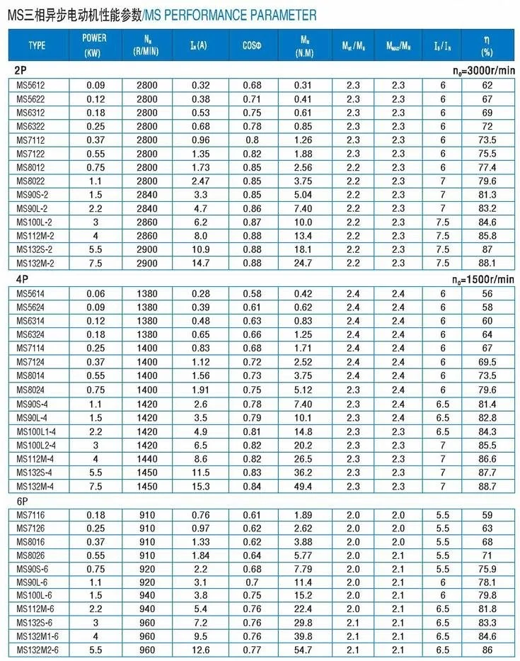

Three Phase Motor Product Introduction
SMK Transmission supplies MS series aluminum-housing three phase asynchronous motors for general industrial drive systems, together with single-phase and brake motor options. These motors can be supplied separately or matched with SMK worm and hypoid gearboxes.
Three Phase Motor Selection Data
| Selection item | Information to confirm |
|---|---|
| Rated output | Required shaft power, continuous torque and peak load |
| Speed | Rated rpm or pole count at the specified frequency |
| Electrical supply | Voltage, frequency, phase and starting method |
| Mechanical interface | IEC frame, flange or foot mounting and shaft dimensions |
| Operating duty | Duty cycle, starts per hour and load characteristics |
| Environment | Enclosure, ambient temperature, altitude, dust and moisture |
Selection note: “3 phase motor” and “three phase motor” describe the same industrial motor category. Final selection must use the motor nameplate and application data, not the kW rating alone.
Advantages
- Compact aluminum housing with effective heat dissipation
- IEC-compatible dimensions for common mounting arrangements
- Stable, low-noise operation for industrial duty
- Voltage, frequency, pole and brake options subject to model
- Motor and reducer matching from one supplier
Typical Applications
Three phase motors are used in conveyors, pumps, fans, packaging machines, agricultural equipment, woodworking machinery, automation systems and gear motor assemblies.
Performance Data

Engineering Resources
- How to select a three phase electric motor
- How to match a three phase motor to a gearbox
- Matched worm gear motor options
Assembly and Production Evidence
SMK supports motor and reducer matching from its Jiangsu, China production operation.


Frequently Asked Questions
What is a three phase asynchronous motor?
It is an AC induction motor whose rotor runs slightly below synchronous speed because of slip.
How do I choose three phase motor power?
Calculate continuous and peak mechanical load, include transmission losses, and verify acceleration, starting torque and duty before selecting the rated output.
Can SMK match a motor to a gearbox?
Yes. Provide input supply, output speed, torque, duty and mounting needs so the motor and reducer can be checked as one system.